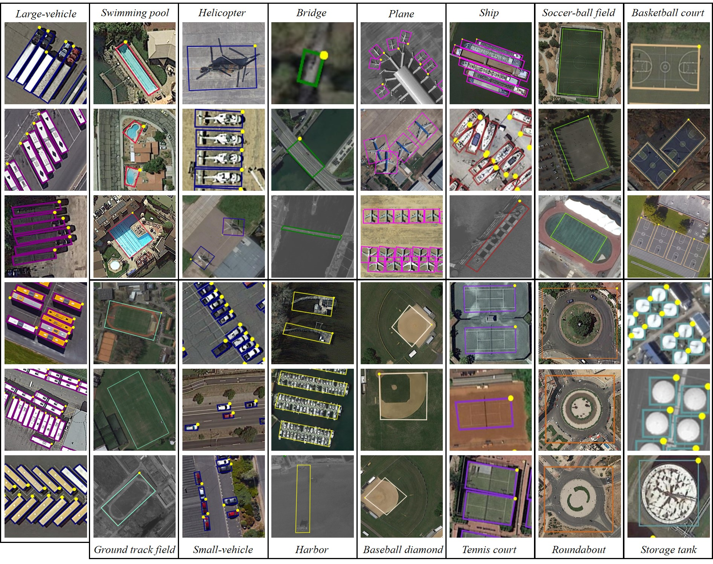
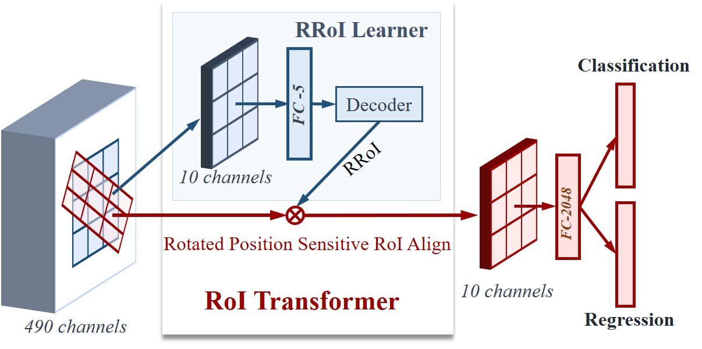
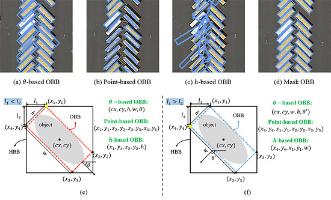
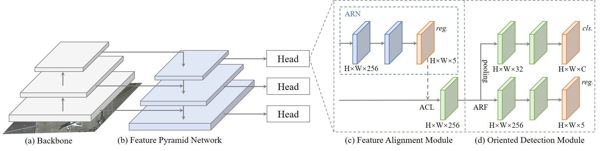
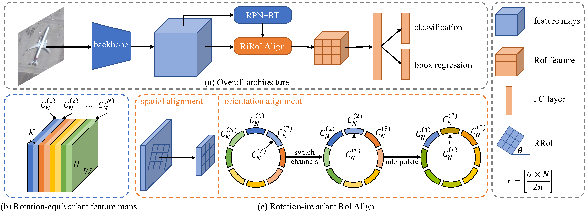
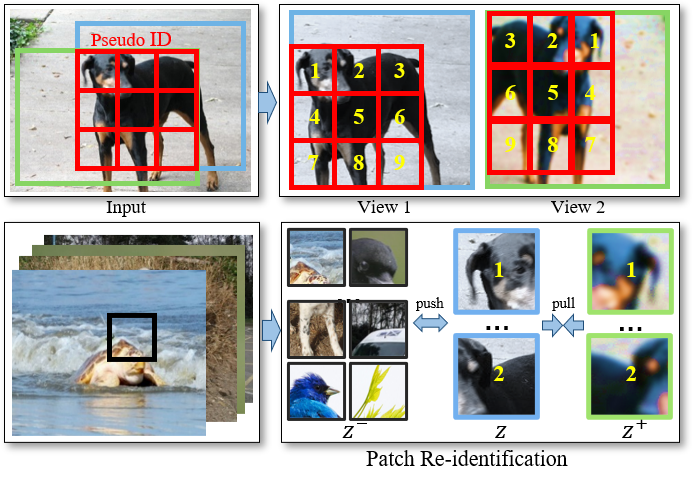
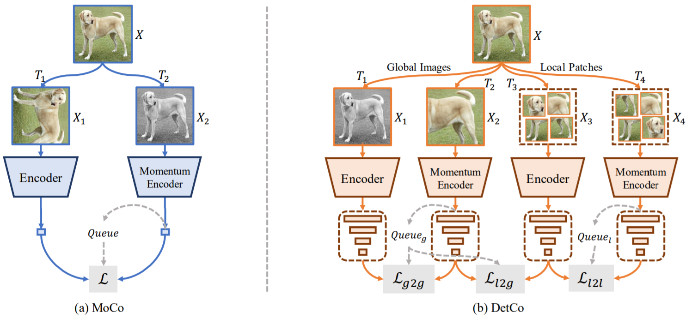
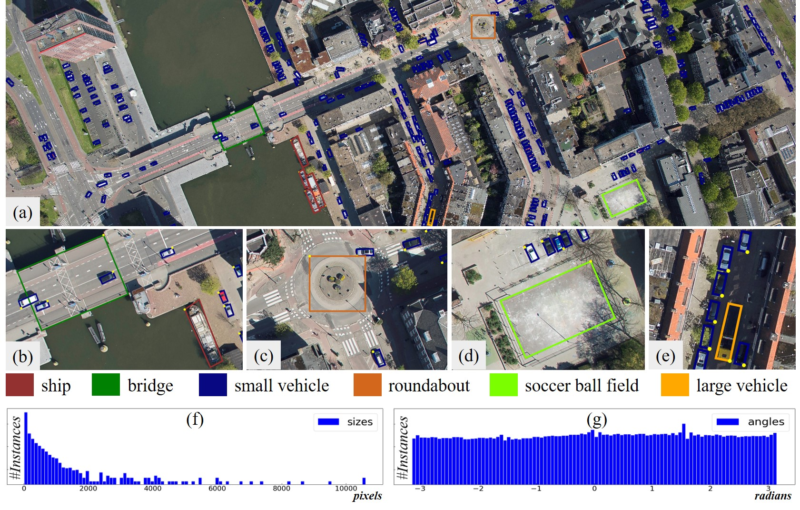

Jian Ding
CAPTAIN Group
LIESMARS, Wuhan University
Email: jian.ding@whu.edu.cn
Github: https://github.com/dingjiansw101
Google Scholar: https://scholar.google.com.sg/citations?user=5HM8wcgAAAAJ&hl=en
I'm a Ph.D. student (2020-) of LIESMARS at Wuhan University, supervised by Prof. Gui-Song Xia. My research interests lie on object detection, visual representation learning and remote sensing. I am the maintainer of DOTA dataset and iSAID dataset. Recently, My interest focus on self supervised learning.
|  |
DOTA: A Large-scale Dataset for Object Detection in Aerial Images. [PDF] [Project Page] Gui-Song Xia, Xiang Bai, Jian Ding, Zhen Zhu, Serge Belongie, Jiebo Luo, Mihai Datcu, Marcello Pelillo, Liangpei Zhang. CVPR, 2018.
|
|  |
Learning RoI Transformer for Detecting Oriented Objects in Aerial Images. [PDF] [Pytorch Code] [MxNet Code] Jian Ding, Nan Xue, Yang Long, Gui-Song Xia, Qikai Lu. CVPR, 2019.
|
|  |
Mask obb: A semantic attention-based mask oriented bounding box representation for multi-category object detection in aerial images. [PDF] Jinwang Wang*, Jian Ding*, Haowen Guo, Wensheng Cheng, Ting Pan, Wen Yang. Remote Sensing, 2019.
|
|  |
Align Deep Features for Oriented Object Detection. [PDF] [Code] Jiaming Han*, Jian Ding*, Jie Li, Gui-Song Xia. TGRS, 2020.
|
|  |
ReDet: A Rotation-equivariant Detector for Aerial Object Detection. [PDF] [Code] Jiaming Han*, Jian Ding*, Nan Xue, Gui-Song Xia. CVPR, 2021.
|
|  |
Unsupervised Pretraining for Object Detection by Patch Reidentification. [PDF] [Code] Jian Ding*, Enze Xie*, Hang Xu, Chenhan Jiang, Zhenguo Li, Ping Luo, Gui-Song Xia. arxiv, 2021.
|
|  |
DetCo: Unsupervised Contrastive Learning for Object Detection. [PDF] [Code] Enze Xie*, Jian Ding*, Wenhai Wang, Xiaohang Zhan, Hang Xu, Zhenguo Li, Ping Luo. arxiv, 2021.
|
|  |
Object Detection in Aerial Images: A Large-Scale Benchmark and Challenges. [PDF] [Code] Jian Ding, Nan Xue, Gui-Song Xia, Xiang Bai, Wen Yang, Micheal Ying Yang, Serge Belongie, Jiebo Luo, Mihai Datcu, Marcello Pelillo, Liangpei Zhang. arxiv, 2021.
|
-------- [ Google Scholar ] --------